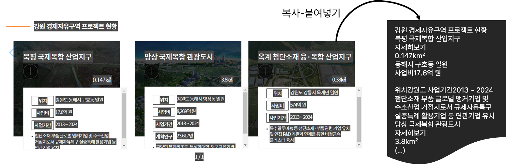
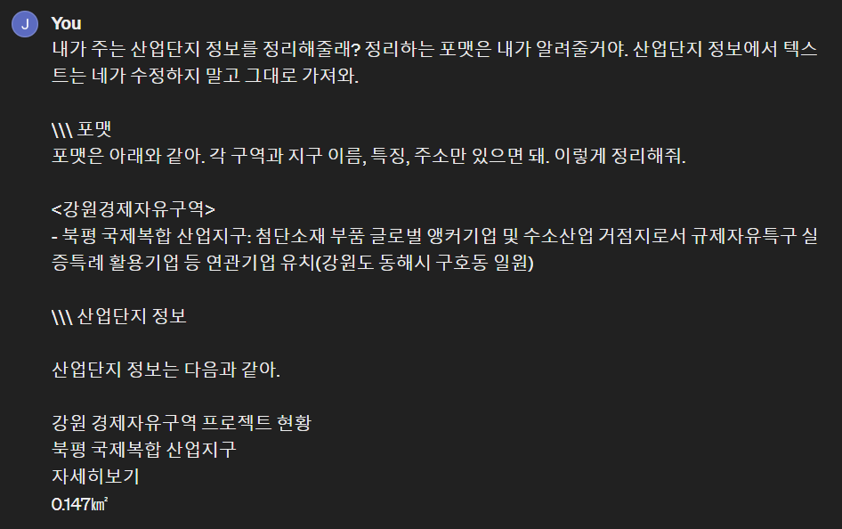
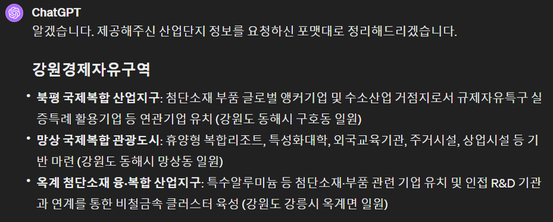
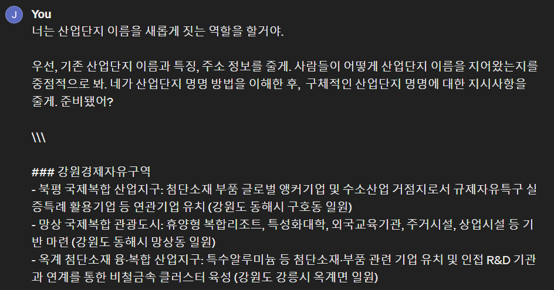
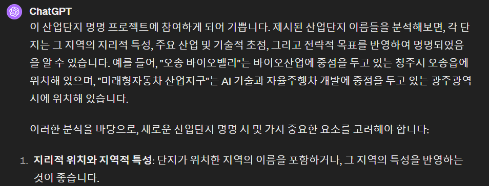
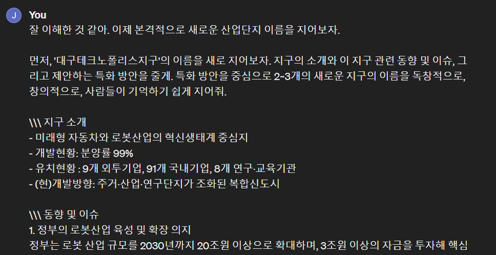
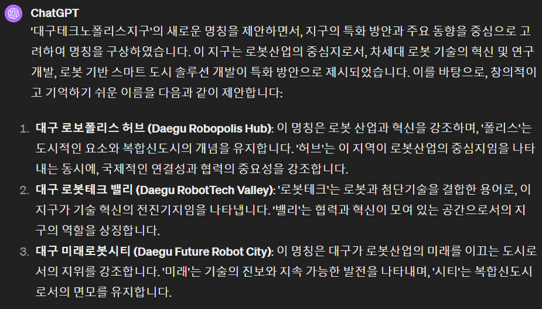

서론
요즘 산업단지, 경제자유구역은 ‘수성알파시티’나 ’포항블루밸리’ 같은 이름을 붙이기도 합니다. 전통적인 산업단지 명칭인 OO지구, OO산업단지 보다 더 생동감 있고 혁신적인 느낌을 주고 싶어서 같습니다. 브랜딩의 일종이라고 생각합니다.
이 글에서는 AI를 활용하여 산업단지의 새로운 이름을 만드는 과정을 소개하고자 합니다:
- 데이터 수집: 산업단지 기본 정보 수집
- 산업단지 명명법 학습: 수집된 데이터로 AI에게 명명의 맥락과 기준 학습
- 명칭 생성: 주어진 상황에 적합한 산업단지 새로운 명칭 생성
1. 데이터 수집
웹사이트에서 먼저 정보를 수집한다. OO지구, OO산업단지와 같은 이름을 제외한 산업단지 정보를 별다른 과정 없이 그대로 드래그, 복사, 붙여넣기를 한다.

수집한 정보를 보기 좋게 수정해달라고 ChatGPT에게 부탁한다.

ChatGPT가 잘 정리해서 주는 이 정보를 활용한다.

2. 산업단지 명명법 학습
수집한 정보로 AI에게 산업단지 이름 짓는 법을 알려준다.

산업단지 명명 방법을 ChatGPT가 잘 이해한 것 같다.

3. 명칭 생성
각 산업단지 이름을 짓는 맥락을 주고, 새로운 이름 2~3개를 추천 받는다. 현재 지구 소개와 동향 및 이슈, 그리고 특화방안을 알려주고 특히, 특화 방안을 중심으로 이름을 짓도록 한다.
‘잘 이해한 것 같아’ 와 같은 피드백은 ChatGPT 사용하면서 유용했던 것 같다.

‘대구로보폴리스허브’, ‘대구로보테크밸리’ 등 추천한 이름을 확인할 수 있다.

마무리
ChatGPT와 같은 AI가 제시하는 산업단지 명칭들은 새로운 관점을 제공하지만, 그것만으로는 충분하지 않다. 최종 명칭을 결정하기 전에, 전문가와 이해관계자들의 의견을 듣고 심도 있는 논의를 거치는 것이 반드시 필요하다. AI의 제안이 흥미롭고 도움이 되긴 하지만, 실제 명칭을 확정하는 데는 인간의 판단력과 조율이 필요로 하다.
이 프로젝트가 AI와 인간이 함께 노력할 때 더 나은 결과를 만들어낼 수 있음을 보여주는 예시가 되면 좋겠다. AI는 새로운 아이디어를 제공하지만, 그 아이디어를 실제로 적용하고 완성하는 건 우리의 몫이라고 생각한다.